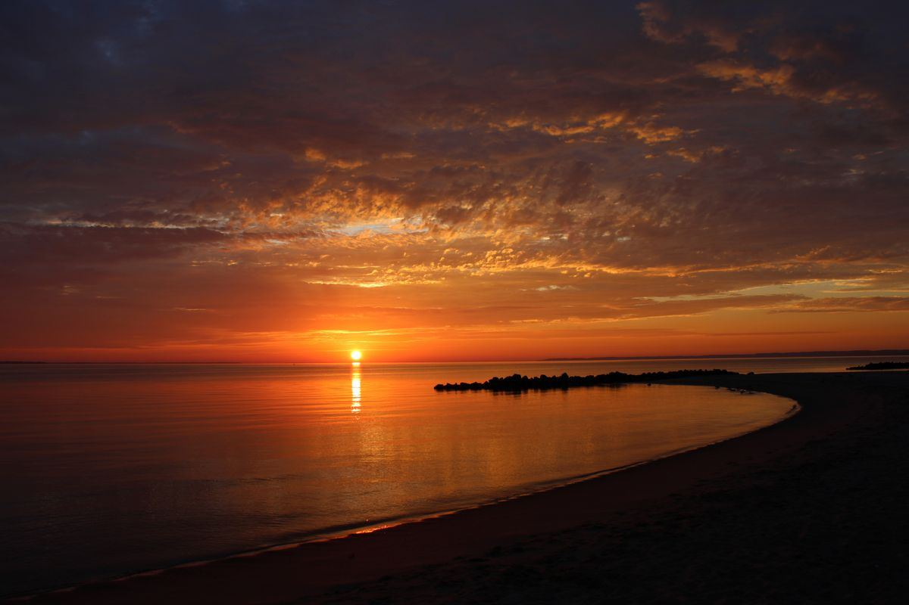
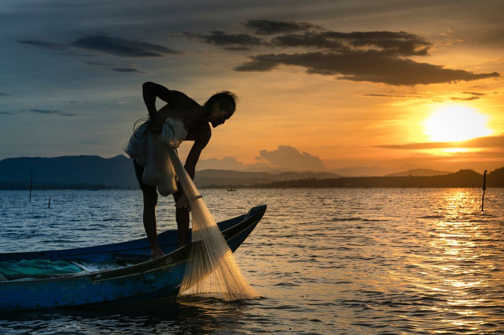
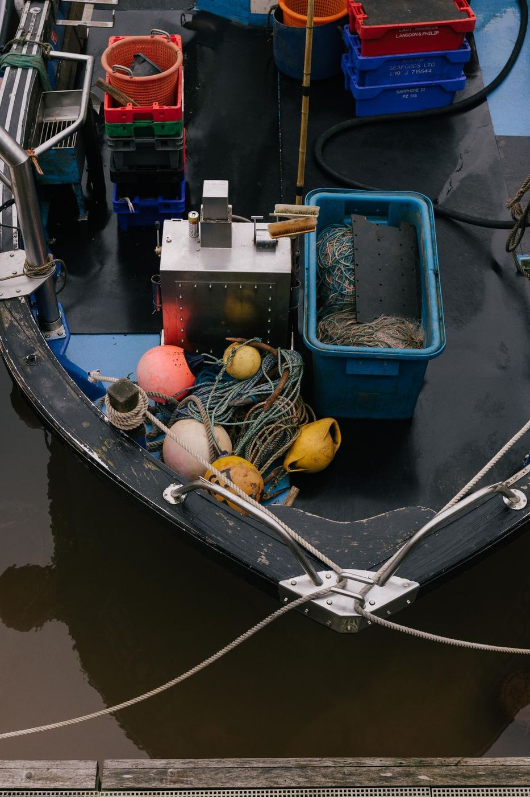

The trips
Every trip leaves from Biloxi and runs with Captain Chad Jay at the helm. Bait, tackle, rods, fuel, licenses, ice, and filleting are included on all three.
The bays and marsh edges around Biloxi. Calm, close, and productive, this is the trip for first-timers, families, and anyone who wants steady action without the long run offshore. Kids are welcome aboard.

Just off the beach, where the water opens up. A short run out puts you over fish that run bigger and fight harder than anything in the bay.

Over the structure offshore. Reefs and wrecks hold the bottom fish, and this is where the coolers fill up. The captain has fished these spots for decades.

Shallow draft for the bays and marshes. Stable, roomy, and built for casting.
Per an older listing, the offshore runs go out on a 30-foot Contender. Built for the run to the reefs and wrecks.